UX/UI Designer · Researcher · Portfolio 2026
사소한 불편도 그냥 지나치지 않습니다
리서치와 인터뷰로 일상의 문제를 면밀히 파악하고,
데이터를 기반으로 사용자 친화적 인터페이스를 구현합니다
이렇게 일합니다
Projects
"편향된 여론은 댓글 인터페이스로부터 비롯된다."
— 논문, 데이터, 사용자로부터 검증한 댓글 편향 문제, UI로 해결했습니다
프로젝트 시작 전, 온라인 댓글의 문제 의식을 논리적인 근거로 정리하기 위해 국내외 논문 4편을 직접 읽었습니다.
단순한 인용이 아니라, "댓글 UI를 어떻게 바꿔야 하는가"라는 질문으로 연결했습니다.
Understanding news-related user comments and their effects: a systematic review
체계적 문헌 고찰여론 형성뉴스 댓글이 독자의 기사 해석과 태도 형성에 실제로 영향을 미친다는 것을 다수의 선행연구를 종합해 확인한 연구입니다.
논문 원문 →첫 댓글의 영향력: 온라인 뉴스댓글에 대한 정보왜곡 효과 탐구
초기 댓글 효과국내 연구뉴스 기사에서 먼저 보이는 댓글의 방향(찬성/반대)이 이후 독자의 의견과 기사 평가를 왜곡한다는 것을 실험으로 증명했습니다.
논문 원문 →The effects of popularity metrics in news comments on the formation of public opinion: Evidence from an internet portal site
댓글 정렬 효과좋아요 기반 노출인터넷 뉴스 환경에서 ‘가장 많이 추천된 댓글’을 먼저 보여주는 구조 자체가 중립적인 표시 방식이 아니라, 특정 의견이 더 대표적이거나 우세해 보이도록 만드는 설계 요소일 수 있음을 밝혔습니다.
논문 원문 →The Impact of Social Endorsement Cues and Manipulability Concerns on Perceptions of News Credibility
사회적 반응 지표조작 가능성 인식좋아요·공유·댓글 수 같은 반응 지표가 조작될 수 있다는 우려만으로도 뉴스 전체의 신뢰도가 낮아질 수 있음을 보여줍니다.
논문 원문 →4편의 논문으로부터 발견한 것
그렇다면 이러한 편향성이 강화되지 않도록,
댓글 노출 구조를 조정하고 조작 댓글을 판별하는 방향으로 개선 방안이 필요합니다.
논문으로 문제를 확인한 후, 현재 주요 플랫폼들이 댓글 편향을 어떻게 다루고 있는지 분석했습니다. 각각의 방식이 왜 근본적인 해결책이 되지 못하는지를 파악하는 것이 설계의 출발점이었습니다.
경쟁 분석 결론 → 설계 방향 도출
1. 문제의식
선행연구를 통해 먼저 노출되는 댓글이 독자의 판단에 영향을 줄 수 있다는 것을 확인했습니다.
그렇다면 사용자가 가장 먼저 접하는 상위 노출 댓글이, 실제로 전체 댓글의 의견 분포를 얼마나 대표하고 있는지 궁금했습니다.
상위 댓글이 전체를 충분히 반영하지 못한다면, 댓글 인터페이스는 일부 의견을 더 대표적인 것처럼 보이게 만들 가능성이 있기 때문입니다.
2. 분석 방법
인스타그램 유명인 논란 게시물 15개를 대상으로 댓글 데이터를 직접 수집했습니다. 각 게시물에서 좋아요 기준 상위 노출 댓글 10개와 나머지 댓글의 의견 분포를 비교했습니다. 댓글의 의견 분류는 AI를 활용해 1차 분류한 뒤, 모호하거나 문맥 해석이 필요한 사례는 직접 검수·수정하는 방식으로 진행했습니다.
인스타그램은 구독 관계보다 추천 기반 노출의 비중이 높아 더 다양한 반응을 기대할 수 있는 플랫폼입니다.
대표 케이스 3개
케이스 A
연예인 A씨
스캔들 논란
상위 10개: 비판 90% / 옹호 10% / 중립 0%
나머지 댓글: 비판 52% / 옹호 28% / 중립 20%
비판 +38%p 대표
나머지 댓글에서 옹호·중립이 절반 가까이 존재
케이스 B
연예인 B씨
발언 논란
상위 10개: 옹호 80% / 비판 10% / 중립 10%
나머지 90개: 옹호 41% / 비판 36% / 중립 23%
옹호 +39%p 과대 대표
상위만 보면 압도적 옹호이지만, 나머지에서는 비판이 거의 동등한 비중
케이스 C
크리에이터 C씨
광고 논란
상위 10개: 비판 50% / 옹호 30% / 중립 20%
나머지 90개: 비판 43% / 옹호 33% / 중립 24%
비교적 유사 (+7%p)
상위 댓글이 특정 방향으로 극단적이지 않은 경우, 나머지와 분포가 비슷
3. 핵심 발견
10개 게시물 중 7개(70%)에서 상위 노출 댓글과 나머지 댓글의 의견 분포가 상이했습니다.
즉, 대부분의 게시물에서 사용자가 먼저 보는 댓글이 전체 의견 분포를 충분히 반영하지 못하고 있었습니다.
10개 게시물 분석 결과
상위 10개 댓글은 나머지 댓글을 대표하는가?
논란 게시물 10개 · 상위: 좋아요 기준 상위 10개 · 나머지: 그 외 90개 · 분류: 비판 / 옹호 / 중립
→ 10개 중 7개(70%)에서 상위 댓글의 지배적 의견 비율이 나머지보다 10%p 이상 높게 나타났습니다.
상위 댓글만으로는 전체 의견 분포를 파악하기 어려운 경우가 대부분이었습니다.
4. 해석
이 분석은 사용자가 먼저 접하는 댓글이 전체 의견 분포를 얼마나 대표하는지 점검하기 위한 것입니다.
→ 댓글의 노출 구조가 전체 의견을 왜곡할 가능성을 확인했습니다.
그렇다면 이 편향된 표면이 실제로 사용자의 판단에 영향을 주는지를 Step 04에서 검증했습니다.
실험 설계
실험 결과
참여자 A (23세, 여)
"내 생각이 바뀌진 않았는데, 이렇게 생각하는 사람도 있구나 싶긴 했어요."참여자 B (22세, 남)
"댓글 보고 나서 영상을 다시 보니까 아까는 안 보이던 부분이 눈에 들어왔어요."참여자 C (24세, 여)
"내 의견이 틀린 건 아닌데, 댓글이 많으면 뭔가 그쪽이 맞는 것 같은 느낌이 들어요."인사이트
프로토타입 시연영상
선행연구에서 단일 지표 기반 상위 노출 댓글이 독자의 해석에 개입할 수 있다는 근거를 확인했고(Step 01~02),
직접 데이터를 분석해 상위 노출 댓글이 전체 의견을 대표하지 못한다는 것을 발견했으며(Step 03),
인터뷰를 통해 편향된 댓글이 실제로 사용자의 해석 맥락을 바꿀 수 있다는 것을 확인했습니다(Step 04).
이 과정에서 도출한 3가지 핵심 문제에서 솔루션 설계를 시작했습니다.
문제 ①
어떤 댓글이
먼저 보이는가
노출 순서
문제 ②
어떤 댓글이
위로 올라가는가
정렬 기준
문제 ③
조작된 댓글을
걸러낼 수 있는가
신뢰도
5개 기능은 각각 이 문제에 대응합니다.
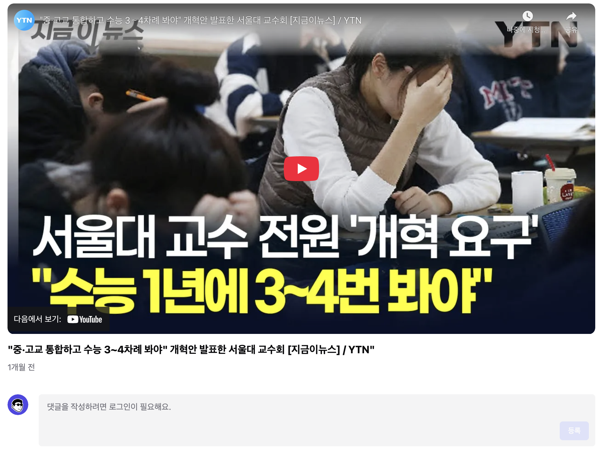
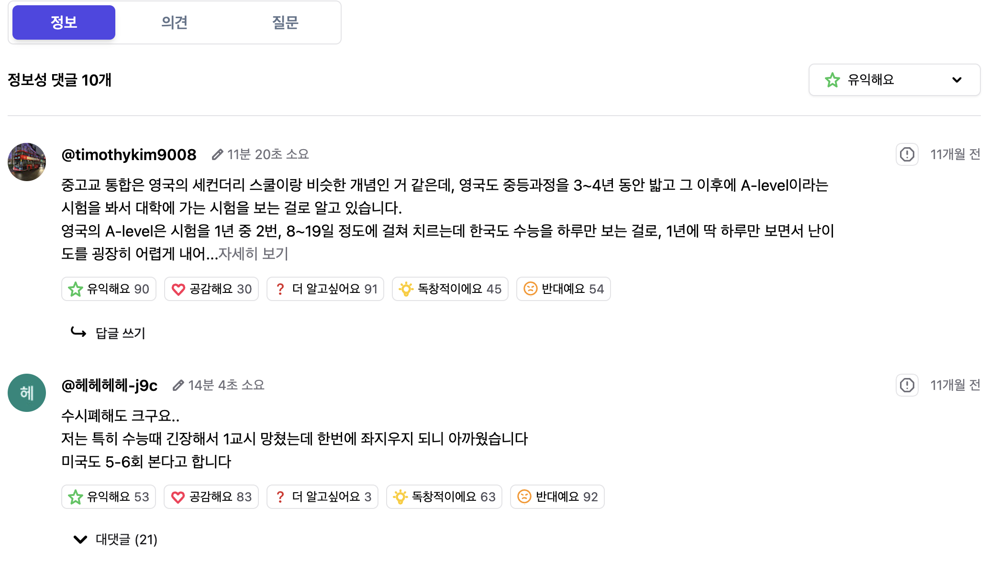
AI 댓글 분류
댓글을 정보 / 의견 / 질문 3개 탭으로 AI가 자동 분류합니다. 앱 진입 시 디폴트 탭은 "정보"로 고정됩니다. 기존 플랫폼처럼 편향된 의견이 가장 먼저 눈에 들어오는 구조를 차단합니다.
정보성 댓글을 먼저 탐색한 뒤 의견 탭으로 이동하는 흐름은, 사용자가 콘텐츠에 대한 독립적인 판단을 먼저 형성하도록 유도합니다.
→ 해결: 초기 노출 순서로 인한 앵커 편향 차단
다양한 반응 버튼 & 정렬
기존 "좋아요" 단일 버튼을 유익해요 · 공감해요 · 더 알고싶어요 · 독창적이에요 · 반대예요 5가지 반응으로 세분화했습니다.
좋아요 숫자만으로 댓글 순위를 결정하는 구조에서 벗어나, 사용자는 반응 종류별로 정렬해 원하는 맥락의 댓글을 직접 탐색할 수 있습니다. 인기 = 신뢰라는 잘못된 등식을 UI 레벨에서 해소합니다.
→ 해결: 좋아요 단일 지표의 편향 증폭 구조 해소
의견 클러스터링
AI가 유사한 의견을 자동으로 묶어 클러스터 단위로 시각화합니다. 개별 댓글 전에 찬성·반대·중립 등 모든 관점을 동등하게 먼저 파악할 수 있습니다.
→ 해결: 병렬 탐색 가능
댓글 트래픽 시각화
각 클러스터의 시간대별 댓글 트래픽을 그래프로 제공합니다. 비정상적 집중 구간을 사용자가 직접 확인해 스스로 조작 여부를 판단할 수 있습니다.
→ 해결: 조작 댓글 패턴 가시화
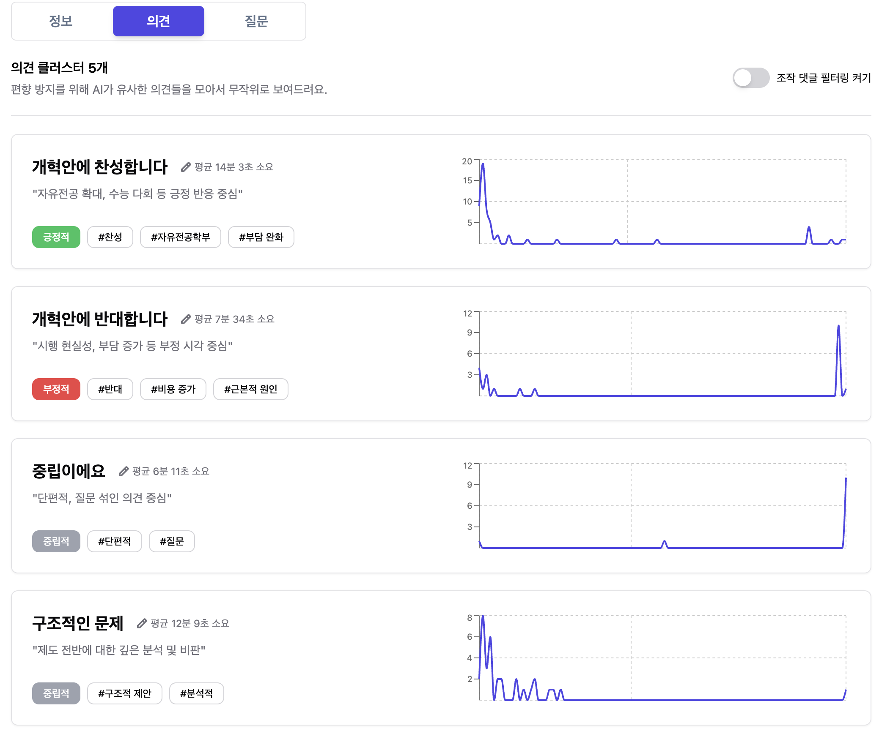
댓글 작성 패턴(단시간 집중 작성, 유사 문구 반복)을 분석해 조작 가능성이 있는 댓글을 자동으로 탐지·필터링합니다. 토글 스위치로 ON/OFF 가능하며, 필터링 전후를 직접 비교할 수 있습니다.
필터링 OFF — 의견 57개
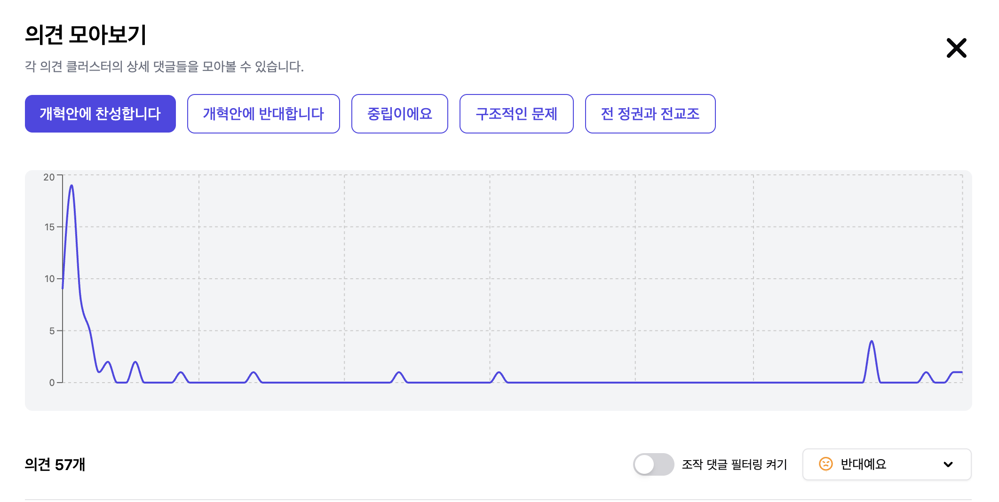
초반 트래픽 스파이크가 두드러짐 — 의심 가능 구간 포함
필터링 ON — 의견 48개 (−9개 제거)
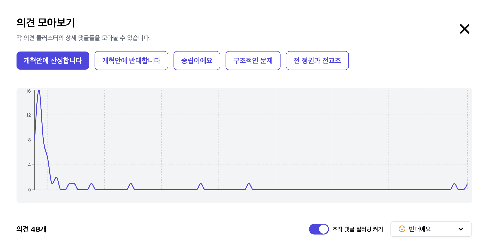
후반 이상 스파이크 제거 → 더 자연스러운 트래픽 패턴
→ 해결: 조작 댓글의 자동 탐지 및 사용자 주도적 필터링
5가지 기능이 탑재된 프로토타입을 대상으로 참여자 4명에게 3가지 태스크를 수행하게 하고, Think-Aloud 방식으로 실시간 반응을 기록했습니다.
참여자 반응
참여자 A · 23세 여성
"정보 탭이 먼저 나오니까 영상 내용을 먼저 이해하게 되더라고요. 예전엔 댓글 보고 영상 해석하는 느낌이었는데."
참여자 B · 22세 남성
"클러스터로 보니까 '아 이 영상은 찬반이 비슷하구나'를 한눈에 알 수 있었어요. 다양한 관점을 병렬로 탐색할 수 있었습니다."
참여자 C · 24세 여성
"트래픽 그래프에서 특정 시간에 댓글이 폭발한 게 보이니까 '아 이거 댓글 부대 아닌가?' 싶었어요. 되게 유용한 기능인 것 같아요."
참여자 D · 25세 남성
"모든 플랫폼이 이렇게 바뀌면 좋겠다 싶었어요. 반응 버튼도 좋아요만 있는 것보다 훨씬 말하고 싶은 걸 표현할 수 있고요."
개선 과제: AI 자동 분류 기준의 일관성 강화 및 클러스터 레이블 명확화 필요. 일부 참여자가 정보·의견 경계가 모호한 댓글 분류에 혼란을 느꼈습니다.
내가 한 것
문제 정의
논문 4편 직접 독해 · YouTube 댓글 데이터 수집 및 분석 · 경쟁사 인터페이스 비교
솔루션 기획
Feature 01 · 03 · 05 아이디어 제안 — 댓글 탭 분류, 반응 버튼 다양화, 발화 목적 유도 기능
사용자 인터뷰
팀 전체 A/B 테스트 설계 및 진행 참여 · 반응 관찰 및 기록
프로토타입 평가
Think-Aloud 유저 테스트 질문지 · 태스크 시나리오 설계
배운 것
문제를 면밀히 파악할수록 솔루션은 자연스럽게 따라온다
논문 · 데이터 · 인터뷰를 통해 "댓글 편향"이라는 막연한 문제를 구체적인 원인으로 분해했을 때, 어떤 기능이 필요한지는 스스로 드러났습니다. 좋은 아이디어를 떠올리려 하기 전에, 문제를 제대로 정의하는 것이 먼저라는 걸 이 프로젝트에서 처음으로 체감했습니다.
내 관점이 사용자의 관점이 아닐 수 있다
직접 만든 프로토타입을 실제 사용자에게 처음 내밀었을 때, 예상치 못한 지점에서 막히는 모습을 봤습니다. Think-Aloud를 통해 수집한 피드백을 반영하는 과정에서 — 설계자의 눈과 사용자의 눈은 다르다는 것을, 그리고 그 간극을 좁히는 것이 UX의 핵심임을 배웠습니다.
기획부터 UI 디자인, Android 개발까지 직접 수행하며,
관계와 맥락을 이해하는 AI 메일 서비스를 실제 동작하는 앱으로 구현했습니다
OVERVIEW — 직접 느낀 불편함에서 시작했습니다
교수님, 조교, 대외활동 담당자 — 대학 생활에서 메일을 쓸 일은 생각보다 많았습니다.
매번 상대에 맞는 톤과 격식을 고민하느라 한 통에도 적지 않은 시간이 걸렸습니다.
AI를 활용해 보았지만, 결과물은 만족스럽지 않았습니다.
반복적인 프롬프트 수정과 재작성 — 오히려 더 번거로운 경험이었습니다.
이것은 저만 느낀 문제일까요?
① 설문 조사(학생 대상)
대학생 124명을 대상으로 설문한 결과, 71.5%가 주 1회 이상 메일을 발송하고 있었으며, 그 중 68.5%는 이미 AI 도구를 활용한 경험이 있었습니다. 대학생에게도 이메일은 필수적인 소통 수단이며, AI 활용도 이미 보편화되어 있었습니다. 그럼에도 불구하고 설문 결과, AI를 활용해도 메일 작성은 여전히 불편하다는 점을 확인할 수 있었습니다. 그 구체적인 이유도 함께 살펴보았습니다.
이메일 작성 시 가장 큰 어려움 (복수 응답)
경어 및 격식 표현으로 작성하기
Politeness 수준 판단이 가장 큰 심리적 부담으로 작용합니다
64.5%
38.7%
용건의 자연스러운 연결 및 문맥 구성
22.6%
핵심 요약 및 적정 분량 조절
기존 생성형AI 활용 시 불만족 사유 (복수 응답)
문체가 지나치게 기계적이거나 상투적
AI 특유의 말투가 가장 큰 불만족 요인입니다
54.2%
47.6%
매번 맥락을 직접 알려줘야 해서 번거로움
38.5%
문장이 불필요하게 길고 사족이 많음
29.1%
평소 언어 습관과 괴리감이 커서 수정이 번거로움
AI 초안 수정률
AI 초안의 50% 이상을 직접 다시 수정한다고 답한 응답자 — 74.2%
AI 초안을 받고도 10명 중 7명이 절반 이상을 다시 수정합니다
기존 AI 도구가 '초안 작성' 시간은 줄여주지만, 결국 상대에 맞게 톤과 격식을 다듬는 과정에서 다시 시간을 쓰게 됩니다.
AI는 '쓰는 시간'은 줄여줬지만, '다듬는 시간'을 해결하지 못했습니다.
② 학생만의 문제는 아닙니다
1) 업무에서 이메일에 쓰는 시간은 생각보다 많습니다.
2) 왜 이렇게 이메일 작성에 시간이 걸릴까요?
지식노동자 10명 중 7명이 상대에 맞는 말투와 격식을 맞추는 것이 가장 큰 부담이라고 답했습니다
조사 대상: 미국 내 지식 노동자 1,001명 및 비즈니스 리더 251명 · 텍스트 기반 협업 시 겪는 주요 어려움
Grammarly & Harris Poll, The State of Business Communication Report (2023/2024)
이런 관점도 있습니다 — NEGATIVITY BIAS
이메일은 표정이나 말투 같은 비언어적 단서가 없기 때문에,
수신자는 작성자의 의도보다 더 부정적으로 해석하는 경향이 있다고 합니다.
이러한 특성이 작성자로 하여금 톤 조절에 더 많은 시간과 에너지를 쓰게 만드는 원인일 수 있습니다.
Baron, N.S. · Always On: Language in an Online and Mobile World (2008)
설문 데이터와 업계 리포트를 종합한 결과, 생성형 AI를 활용하더라도 이메일 작성의 부담은 여전히 남아 있었습니다.
그 불편은 크게 세 가지로 수렴되었습니다.
그렇다면 AI 메일 서비스들은 이 문제를 어떻게 풀고 있을까요?
주요 AI 메일 서비스 3개를 대상으로 핵심 기능과 실사용 리뷰를 분석했습니다.
Gmail · Gemini
Help me write
짧은 명령어로 메일 초안 생성
Refine
'격식 있게', '더 길게/짧게' 버튼으로 즉시 수정
Smart Reply
수신 메일 분석 후 3~4개 답장 후보 제안
실사용 리뷰
"'격식 있게', '더 길게'… 선택지가 너무 뭉뚱그려져 있어서
실제 상황에 맞게 톤을 바꾸기가 어려웠어요."
Outlook · Copilot
Draft with Copilot
워드·엑셀·팀즈 기록을 참고해 초안 작성
Coaching
명확성·톤·감정을 분석해 실시간 피드백
Summary
메일 스레드 요약 + 핵심 Action Items 정리
실사용 리뷰
"초안은 그럴듯한데, 너무 깔끔해서 오히려 내가 쓴 것 같지 않아요."
"톤 코칭도 '더 공손하게' 정도라 실질적 도움이 안 됐어요."
Ellie.ai
Style Learning
과거 발신 메일로 말투를 학습해 답장 생성
Thread Context
이메일 스레드 맥락을 읽어 답장에 반영
Cross-Platform
Gmail·Outlook·LinkedIn 지원
실사용 리뷰
"말투는 비슷하게 나오는데, 누구한테 보내든 톤이 똑같아요."
"학습시키려면 내가 직접 메일을 골라서 넣어줘야 해서 번거로웠어요."
분석 결과, 맥락과 문체는 기존 서비스들이 어느 정도 해결하고 있었습니다.
Copilot은 문서·회의 기록을 참고해 맥락을 반영하고, Ellie.ai는 과거 메일로 문체를 학습합니다.
CORE GAP
그러나 '관계'는
아무도 풀지 못했습니다
Refine, Coaching, Style Learning —
모두 '누구에게 보내는가'를 모른 채 작동하고 있었습니다.
사람들은 수신자와의 관계를 이해하고,
처음부터 그 사람에게 맞는 톤으로 메일을 작성하고 싶은 것이 아닐까요?
UI는 두 가지 경험을 중심에 두고 설계했습니다. 관계 정보를 기반으로 처음부터 맥락에 맞는 초안을 제안하고, 사용자가 직접 타이핑할 때는 실시간 제안으로 흐름을 끊지 않도록 하는 것입니다.
핵심 기능 — 관계 기반 AI 메일 생성
연락처에 관계 유형과 그룹 룰을 등록하면, 메일 작성 시 AI가 해당 맥락을 자동으로 반영합니다. 상사에게는 격식체, 친한 동료에게는 편한 톤으로 자동 전환됩니다.
핵심 기능 — 실시간 제안 & 답장 추천
단어·문장 단위 실시간 제안으로 AI에 완전히 의존하지 않고 자연스럽게 쓸 수 있습니다. 수신 메일에 대한 답장 옵션도 관계 맥락을 반영해 복수 제안합니다.
UI Flow
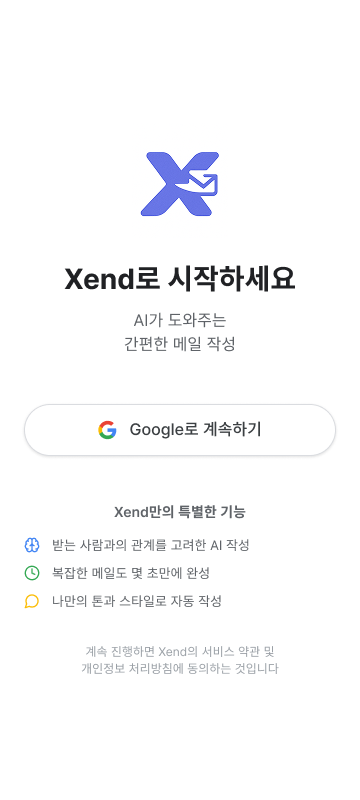
① 로그인
Google 계정으로 간편하게 로그인합니다. 별도 회원가입 없이 즉시 시작할 수 있습니다.
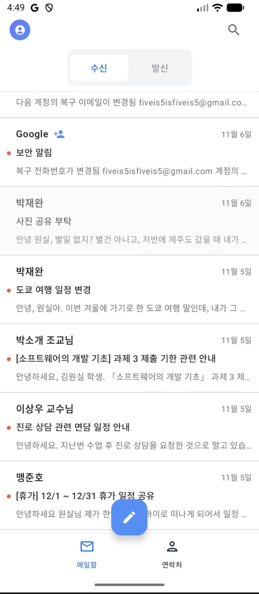
② 메일 리스트
받은 메일함·보낸 메일함을 탭으로 전환합니다. 중앙 볼펜 버튼으로 새 메일을 작성하고, 기존 메일을 탭하면 답장으로 진입합니다.
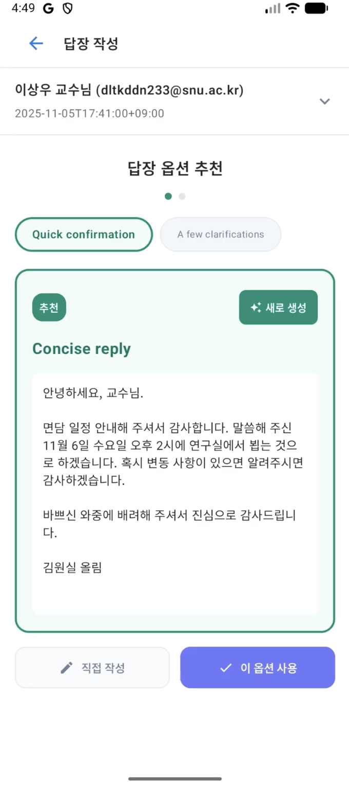
④ 답장 옵션
단일 안이 아닌 여러 대안을 카드로 제시합니다. 스와이프로 비교한 뒤 버튼 한 번으로 즉시 적용할 수 있습니다.
③ 메일 작성
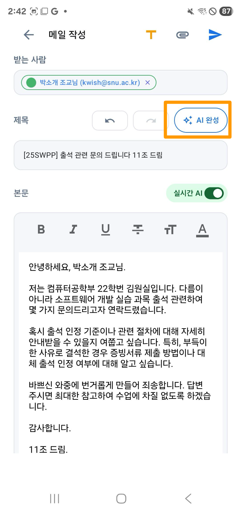
AI 메일 생성
초안을 입력하면 관계·톤 맥락을 반영해 완성된 메일로 생성합니다.
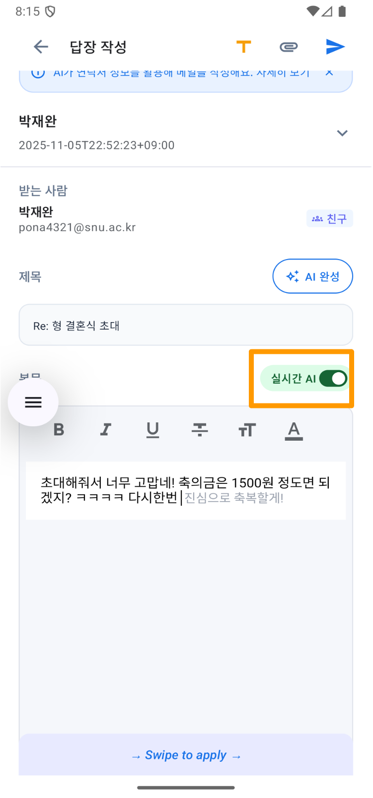
실시간 AI 제안
단어·문장 단위 실시간 제안을 스와이프로 넘기며 선택합니다. AI에 의존하지 않고 자신의 글쓰기 흐름을 유지할 수 있도록 설계했습니다.
⑤ 연락처 관리
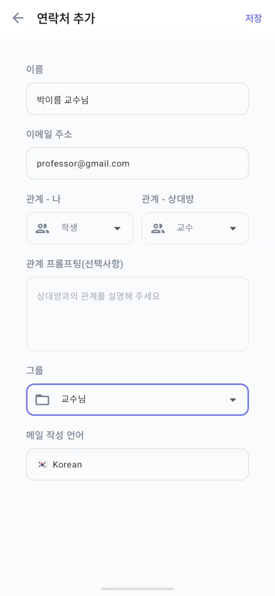
개인 연락처
각 연락처에 관계 유형과 프롬프트를 직접 입력합니다. AI가 메일 작성 시 자동으로 반영합니다.
따로 연락처 탭이 아니더라도 메일 작성 시에도 연락처 추가가 바로 가능하도록 편의성을 높였습니다.
그룹 상세 설정
비슷한 관계끼리 그룹으로 묶어 동일한 프롬프트를 일괄 적용할 수 있습니다.
단순히 관계 정보를 넣는 것만으로는 부족했습니다. 나다운 문체까지 재현하려면 더 정교한 방식이 필요했습니다. 세 가지 버전을 거쳐 최종 방식을 완성했습니다.
동일한 수신자·상황 조건에서 v1 / v2 / v3가 생성한 메일을 블라인드로 제시하고, 어떤 버전인지 알리지 않은 채 "가장 보내고 싶은 메일"을 선택하게 했습니다. 참여자들은 실제 계정으로 로그인해 직접 메일을 보내며 경험했습니다.
테스트 결과
92%
v3(Style-Aligned) 선택률 — n > 5
Tester A
"교수님께 메일 쓸 때 Gemini도 써봤는데, Xend가 훨씬 효율적이에요."Tester B
"내가 직접 쓴 것 같아요."Tester C
"실제 상황이었어도 바로 보냈을 것 같아요."테스트가 검증한 것
테스트 이후 개선 방향
연락처를 추가할 때 관계 정보를 사용자가 직접 입력하는 방식은 초기 진입 부담이 컸습니다. 이를 개선하기 위해, AI가 기존 주고받은 메일을 분석하여 관계를 미리 제안해주는 UX 향상 방식도 고려하게 되었습니다.
기획
컨셉 & 서비스 설계
관계 기반 AI 메일 생성 컨셉을 수립했습니다. 경쟁사 3개를 분석해 차별화 포인트를 도출했습니다.
디자인
UI 전체 설계
연락처 관리, 그룹 설정, 메일 작성, 실시간 AI 제안, 답장 옵션 추천 화면을 Figma로 설계하고 프로토타입을 제작했습니다.
개발
Android 앱 구현
Kotlin + Jetpack Compose로 UI 전체를 구현했습니다. 메일 작성·답장 화면을 개발했습니다.
이 프로젝트가 남긴 것
기존 AI 메일 서비스들이 놓치고 있던 '관계'라는 변수 하나가, 사용자 경험을 얼마나 바꿀 수 있는지 직접 확인한 프로젝트였습니다.
기획·디자인·개발을 모두 경험하며, 기능을 추가하는 것보다 빠져 있는 맥락을 찾아내는 것이 더 큰 차이를 만든다는 것을 배웠습니다.
AI 맞춤 추천으로 누구나 직접 인테리어를 설계할 수 있는 서비스,
실리콘밸리 현지 게릴라 인터뷰를 통해 니즈를 발굴했습니다.
MARKET SIZE — 시장 규모와 관심도는 충분히 큽니다
Source: 한국경제
국내 인테리어 시장 규모 (조원)
홈퍼니싱 시장: 2015년 12조 → 2023년 18조원
연평균 5.5% 성장
글로벌 인테리어 시장:
2023년 2,119억 달러 → 2032년 2,486억 달러
(CAGR 8.3%)
DIY 가구점 이용 129% 증가
온라인 가구 판매 42.7% 증가
(2020, 코로나 이후)
인테리어 시장은 계속 성장하지만, 여전히 전문가의 영역으로 여겨져 스스로 결정하기 어렵다는 목소리가 컸습니다. 전문 지식이 부족하면 실패할까 두려워 아예 시도를 미루는 경우가 많았습니다.
이 가정을 검증하기 위해 실리콘밸리 현장에서 바로 인터뷰를 진행했고, Step 02–04에서 타겟과 질문을 다듬어가며 사용자가 실제로 겪는 어려움을 파악해 나갔습니다.
Desk Research — 전문가 의존 인식
가설을 검증하기 위해 실리콘밸리 현지에서 무작위 인터뷰를 시작했습니다. 접근성이 좋고 유동 인구가 많은 버클리 캠퍼스를 첫 장소로 선택했습니다.
질문지 (Question Set)
기본 정보
인테리어 경험
인터뷰 결과 — 4명
16세 남학생
학생
"지금은 잘 모르겠지만 나중엔 필요할 것 같다. 깔끔한 모던 스타일을 좋아하는데 아직은 확고한 취향같은 건 없고 사실 관심이 없다."
실행 경험이 없었고 독립 거주자는 아니었습니다.
40대 부부
주택 거주자
"이미 다양한 시도를 해봤다. 아내는 디자인을, 나는 기술적인 시도를 즐기며 함께 집을 꾸민다. 영상을 보고 직접 해보는 것을 좋아한다."
→ 실거주하며 직접 시도해 본 유일한 응답자였습니다.
20대 대학생
기숙사 거주
"관심은 있지만, 내가 원하는 수준은 DIY의 범위를 넘어선다. 직접 하기엔 너무 막막하다."
기숙사 거주여서 실행이 어려웠고, 관심과 실행 가능성 사이에 간극이 있었습니다.
60대 역사 교수
주택 거주자
"나는 힘들어서 하지는 않는다. 아내와 고모(업계 종사자)가 주로 이끌어서 한다. 하지만 결국 우리 모두가 인테리어를 하게 될 것이라고 생각한다."
직접 결정권이 없었고 인테리어는 타인이 주도했습니다.
표본 분석 — 무엇이 문제였나
1차 인터뷰가 남긴 것
1차 인터뷰의 실패 원인은 니즈의 부재가 아니었습니다.
타겟 조건과 질문 범위를 너무 넓게 잡았던 것이 문제였습니다.
이 인터뷰가 확인시켜 준 것은 사용자의 니즈가 없다는 사실이 아니라, 누구에게, 어떤 문제를, 어떤 질문으로 물어야 하는지가 잘못 설정돼 있었다는 점이었습니다. 다음 인터뷰에서는 타겟과 질문을 전면 재설계했습니다.
1차 인터뷰를 통해, 실행 경험이 없는 사용자를 대상으로 인테리어 전반을 넓게 묻는 방식으로는 유의미한 문제를 포착하기 어렵다는 점을 확인했습니다.
따라서 2차 인터뷰에서는 실제 거주자, 구체적 불편 상황, 경험 중심 질문으로 조건을 다시 설계했습니다.
질문지 (Revised Question Set)
스크리닝
최근 경험
결정 과정
솔루션 반응
2차 인터뷰에서는 '인테리어에 관심이 있는가'를 묻는 것이 아니라,
실제로 어떤 상황에서 결정을 망설였는지를 구체적으로 확인하고자 했습니다.
실제 거주하며 가구 선택을 직접 고민해본 40–50대를 대상으로 다시 인터뷰했습니다. 사용자는 스스로 공간을 꾸미고 싶어 했지만, 무엇이 자신에게 맞는 선택인지 확신하지 못해 결정을 미루는 경우가 많았습니다.
참여자 C (40대, 여)
"내 취향대로 고르고 싶은데, 막상 찾으려면 너무 어렵고 보다 보면 다 비슷해 보여요. 결국 결정 못 하고 포기할 때가 많아요."참여자 A (40대, 여)
"전문가가 아니다 보니 어떤 가구가 좋은 선택인지 잘 모르겠어요. 사람들이 많이 사는 걸 보게 되는데, 그게 우리 집에 맞는지도 확신이 없어요."참여자 B (50대, 남)
"가구 사서 놓았는데 생각이랑 달라서 반품한 적이 한두 번이 아니에요."유효한 인터뷰에서 반복적으로 등장한 실행 장벽
1. 레퍼런스와 실제 적용 사이의 간극
좋은 사례는 많지만, 내 공간·예산에 맞게 정리된 정보가 없어 기준을 만들기 어렵습니다.
결과: 영감만 쌓이고 실행이 멈춥니다.
2. 전문지식 부담
전문가에게 맡기려면 비용·시간 부담이 커서 스스로 결정해야 하지만, 설명을 해줄 도구가 없습니다.
결과: 가볍게 비교·시도하기 어렵고 결정을 미룹니다.
3. 결과 예측 실패
사진·치수만으로는 실제 공간에서 어울림을 판단하기 어렵습니다.
결과: 실패에 대한 두려움으로 실행을 망설입니다.
해결 방향 —
개인맞춤형 정보 제공
상세 조건 없이도 즉시 내 공간·예산에 맞춘 정보와 기준을 제안합니다.
해결 방향 —
전문지식 없이도
전문 용어 대신 행동과 사례 중심으로 추천 근거를 보여줘 사용자가 주도권을 갖도록 돕습니다.
해결 방향 —
공간 적용·예측
내 공간에 바로 시범 적용하고 결과를 비교해 실패에 대한 두려움을 줄입니다.
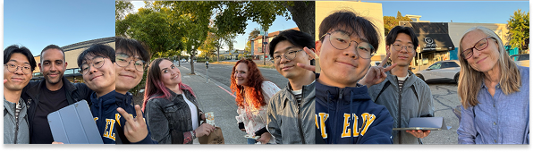
핵심 인사이트
인터뷰에서 확인한 세 가지 문제 — 레퍼런스 간극, 전문지식 부족, 결과 예측 실패 — 를 해결하기 위해 아래 4단계 흐름으로 서비스를 설계했습니다.
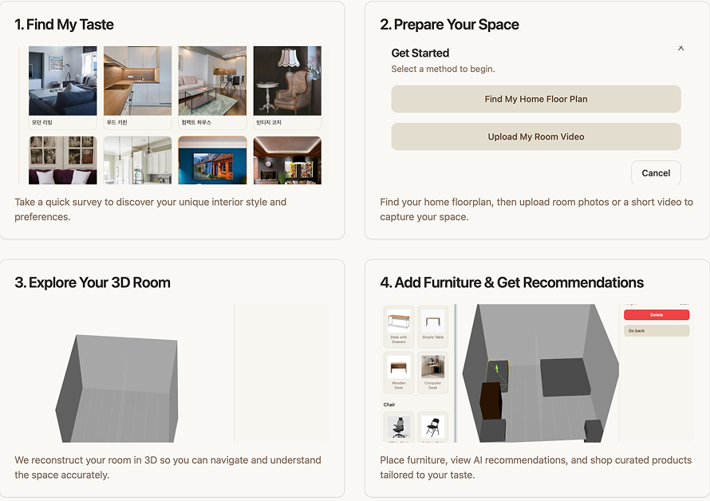
세 기능의 흐름
취향을 기준으로 정리하고 → 그 기준을 이해 가능한 근거로 설명하고 → 선택 행동을 학습해 추천을 정교화합니다.
이 세 단계가 반복되며, 쓸수록 더 개인화된 인테리어 경험을 만듭니다.
경쟁사 분석 — 기존 솔루션은 왜 결정 확신을 만들지 못하는가
기존 솔루션은 상품을 보여주거나 이미지를 생성하는 데는 강하지만, 사용자가 자신의 공간 안에서 직접 비교하고 확신 있게 결정하도록 돕는 데는 한계가 있었습니다.
SpaceIn은 다르게 접근합니다 — 쓸수록 사용자의 취향을 더 잘 아는 AI 인테리어 가이드로서 취향 분석부터 공간 스캔, 배치 확인, 추천 근거 제공까지 하나의 결정 흐름으로 연결했습니다.
이 프로젝트가 남긴 것
낯선 나라에서 모르는 사람들에게 말을 걸고 인터뷰를 이어가며, 관찰·타이밍·질문 구성을 몸으로 체득했습니다. 1차 실패는 단순한 시행착오가 아니라, 문제 정의가 곧 솔루션의 방향임을 직접 확인하는 과정이었습니다.